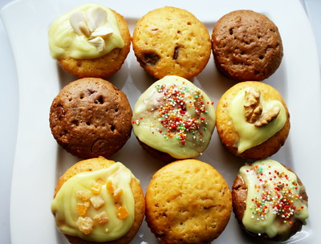
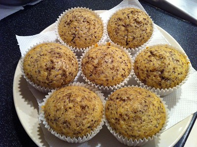

Les muffins sont de petits gâteaux individuels s'apparentant aux madeleines. Apparus au pays de Galles aux alentours du XIe siècle, ils sont très répandus dans les pays anglo-saxons, principalement aux États-Unis. Le principe caractéristique de fabrication des muffins consiste à préparer le mélange des ingrédients liquides et celui des ingrédients secs séparément, puis à mélanger rapidement et grossièrement les deux préparations. Contrairement aux cupcakes, les muffins n’ont jamais de glaçage.
Les muffins sont traditionnellement sucrés. On peut les retrouver au chocolat (avec des pépites de chocolat) ou nature, mais il existe de nombreuses autres variétés : fraise, banane, framboise, orange, vanille, myrtille ou bleuets, etc.
Il existe également des muffins salés, les English muffins ou muffins anglais, ressemblant à des sortes de petites crêpes très épaisses, faits à partir de pâte levée. Ces muffins salés sont quelquefois faits avec de la farine complète. Ils sont notamment employés comme base de la préparation des "œufs Bénédicte".
La recette en vidéo
Ingredients
280 g de farine
2 oeufs
100 g de sucre
150 ml de lait
80 g de beurre (ou 8 cuillères à soupe d'huile)
1 sachet de levure chimique
1 sachet de sucre vanillé
1 pincée de sel
Cannelle
Extrait de vanille
Préparation
Etape 1 :
Dans un premier saladier : mélanger la farine, le sucre, le sel, le sucre vanillé et la levure.
Etape 2 :
Dans un deuxième saladier : mélanger le lait, l'huile(ou beurre fondu) et les oeufs.
Etape 3 :
Verser le contenu du second saladier dans le premier et remuer jusqu'à obtenir une pâte plutôt lisse. Laissez tout de même quelques petits grumeaux.
Etape 4 :
Mettre au four 15 min à 180°C (thermostat 6)
Vos productions

Card title
Some quick example text to build on the card title and make up the bulk of the card's content.

Card title
Some quick example text to build on the card title and make up the bulk of the card's content.
Card title
Some quick example text to build on the card title and make up the bulk of the card's content.